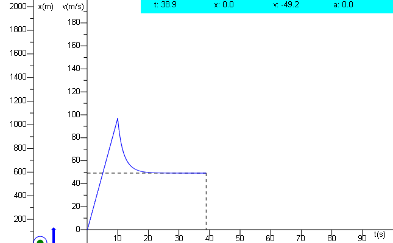
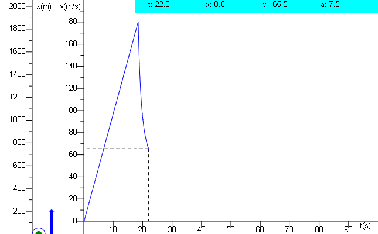

Problema Paracaidas Grupo 1
Masa(Kg):
Area(m
2
):
Altura Inicial(m):
Gravedad (m/s
2
):
intervalos de tiempo:
Coheficiente de forma:
Oprimir en caso de 5
Para el problema del paracaidas se usaron diversas formulas, tambien se pueden modificar diversos valores como lo son la Masa del paracaidista, el Area del paracaidas, la altura desde la cual se lanza el paracaidista, la gravedad que afecta al paracaidista, los intervalos en los cuales se grafica (velocidad de graficado) o el coheficiente de la forma. Despues de realizar varias pruebas observamos como algunas variables influyen en el comportamiento del problema. *A mayor altitud, mayor velocidad se puede alcanzar, adicionalmente, cambia la densidad del aire, a mayor altura menor es esta misma. *A mayor gravedad, mas rapido deciende y viceversa. *A mayor area de paracaidas menor es la caida y viceversa. *A mayor masa, mayor es el area necesaria del paracaidas para poder generar una resistencia al aire y viceversa. *A mayor es el coheficiente de forma mayor es la resistencia generada y menor la velocidad limite.

Ejemplo Normal
En esta Grafica se puede observar una apertura normal del paracaidas a una altura considerable, logrando asi la velocidad limite y reduciendo la aceleracion a 0 entrando en un frendado 'seguro'.
Ejemplo Apertura Temprana
Aca, ocurrio algo distinto a la anterior grafica pues el paracaidas se abrio antes de tiempo ocacionando que a diferencia del anterior el paracaidista no alcance una velocidad tan alta y mas bien se mantenga en la velocidad limite por mas tiempo, alargando asi el tiempo de vuelo.

Ejemplo Apertura Tardia
En este ejemplo de una apertura fallida observamos como el paracaidista abre el paracaidas muy tarde y por ende no logra llegar a la velocidad terminal y choca con el suelo aun presentando una aceleracion, siendo este un aterrizaje fallido e inseguro.